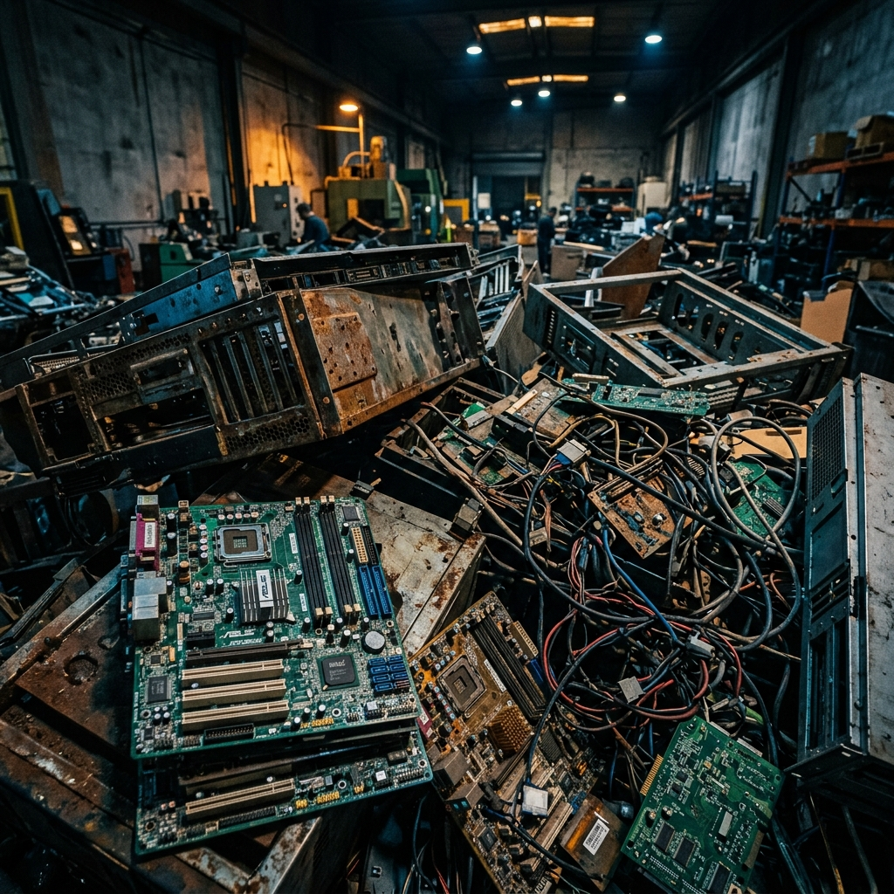

Trascender el Chatbot
La Dualidad de la IA: Eficiencia Técnica frente a Costo Planetario
Una investigación interactiva sobre optimización avanzada de modelos de lenguaje, el impacto de su infraestructura material, el balance de su economía y las dinámicas del extractivismo digital.
El Shift Narrativo de los CEOs de IA
La transición discursiva desde la "salvaguarda de la humanidad" hacia la comercialización acelerada y la carrera por la infraestructura energética.

Guía Sencilla: Adapta tu IA a tus Necesidades
No tienes que usar la IA 'de fábrica'. Configurar tres opciones básicas te permite obtener respuestas mucho más útiles y adaptadas a ti.

Creador de Instrucciones de Personalización
Cargando...
💡 Pega esto en el campo de "Instrucciones Personalizadas" o "System Instructions" de tu IA.
La Huella de la Infraestructura Física

La Burbuja Financiera: Inversión frente a Retorno de Capital
Los análisis financieros estiman una brecha crítica entre el gasto de capital (Capex) en hardware y los ingresos reales por software.
SIMULADOR DE RENTABILIDAD DE IA (BREAK-EVEN)
En base a amortización y tarifas estándar de 20 USD/mesEstima el gasto total de las Big Tech en construir clústeres y comprar chips.
Incluye amortización de chips (3 años) + costos operativos (energía y red).
Suscripciones individuales activas requeridas para cubrir la inversión.
MONITORES DE RENTABILIDAD EN TIEMPO REAL:
IS AI PROFITABLE?
Proyecto independiente que calcula y visualiza el Capex estimado frente a las ganancias de las divisiones de IA de las Big Tech.
Visitar isaiprofitable.com ↗THE $600 BILLION QUESTION
Análisis macroeconómico de David Cahn (Sequoia Capital) sobre la facturación de software requerida para repagar la inversión física en silicio.
Leer análisis de Sequoia ↗Algoritmos Extractivistas: El Cercamiento Material y de Datos
La inteligencia artificial depende del cercamiento de los comunes digitales, del trabajo precarizado y la extracción material territorial.
"La inteligencia artificial es una infraestructura material construida mediante la extracción sistemática de los recursos de la Tierra, del trabajo humano precarizado y de los datos comunes."— Inspirado en Kate Crawford, Atlas of AI (2021)

Fuentes Científicas e Investigaciones Editoriales
- CNBC (2024). "OpenAI plans to restructure corporate governance, become for-profit". Reestructuración de la junta directiva hacia un esquema lucrativo de beneficio público para captación de capitales privados.
- Reuters (2024). "Altman says future AI depends on energy breakthrough". Declaraciones sobre las proyecciones de clústeres eléctricos de alto rendimiento y su demanda insostenible de energía.
- Wired (2024). "OpenAI's safety team collapses as top researchers resign". Renuncia de investigadores del equipo de Superalineación, denunciando que las métricas comerciales subordinaron el análisis de riesgos.
- Bloomberg (2024). "OpenAI pitches White House on massive data centers". Propuesta gubernamental de clústeres de 5 gigavatios y justificación del consumo de infraestructura por competencia geopolítica.
- Agencia Internacional de la Energía (IEA, 2024). "Electricity 2024: Analysis and forecast to 2026". Estimación de un consumo eléctrico promedio de 2.9 Wh por consulta estructurada de IA.
- Li, P., et al. (2023). "Making AI Less 'Thirsty': Uncovering and Addressing the Unseen Environmental Footprint of ChatGPT". Universidad de California, Riverside. Análisis de la evaporación física de agua dulce para enfriar centros de procesamiento informático.
- Crawford, Kate (2021). Atlas of AI: Power, Politics, and the Planetary Costs of Artificial Intelligence. Yale University Press. Ensayo sobre la materialidad física y los impactos sociológicos de la cadena de valor de la IA.
- Couldry, N., & Mejias, U. A. (2019). The Costs of Connection. Stanford University Press. Marco teórico sobre el colonialismo de datos y la expropiación algorítmica de la vida social.
- Time Magazine (2023). "Behind the AI boom, an army of database labelers". Investigación periodística sobre la subcontratación de Sama y moderadores kenianos pagados a menos de 2 USD por hora.
- Is AI Profitable? (2026). Capital Expenditure vs Revenue Tracker. Tracker de viabilidad e inversión global en infraestructura de inteligencia artificial disponible en isaiprofitable.com.